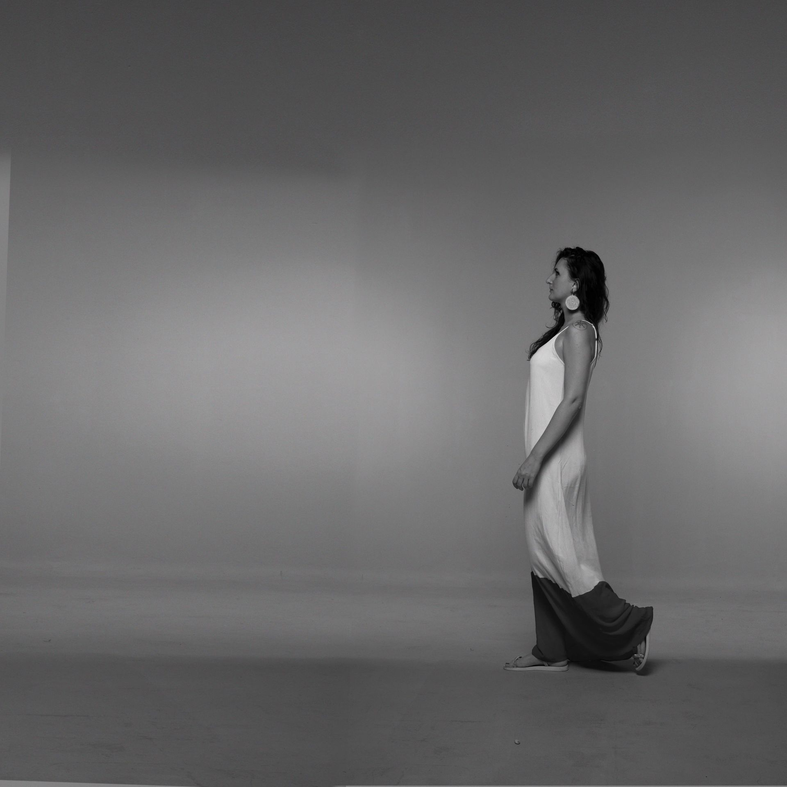

Música
Vento Leste
Álbum de Estreia • Gravado em São Paulo • Produzido por Bruno Dos Reis
"Vento Leste" foi concebido como uma jornada musical profundamente pessoal — uma coleção de composições que respiram entre a delicadeza da música brasileira, a liberdade do jazz e as cores vibrantes das sonoridades romenas. Letras em português e romeno se entrelaçam, criando pontes poéticas e um repertório que fala de encontros, movimento e paisagens interiores.
Músicos
Cauê de Marinis (violão, baixo) • Daniel Grajew (piano, acordeom) • Fábio Sá (baixo, contrabaixo) • Ari Colares (percussão) • Guilherme Tófano (bateria)
Participações especiais: Adriana Holtz, Diego Coelho, Raphael Coelho, Thomas Harres
Composições co-criadas por Mara Halunga e Cauê De Marinis, com contribuição de Will Weber nas letras.
Galeria





Concertos
Contrate Mara Halunga
Disponível para shows, festivais, eventos privados e intercâmbios culturais
Tipos de Apresentação: Sets acústicos duo • Apresentações com banda completa • Ensemble de jazz • Eventos culturais
Contato e Contratação
Consultas Profissionais
Contratações e Assessoria:
contact@marahalunga.com
Siga Mara
Kit de Imprensa
Materiais profissionais e requisitos técnicos disponíveis mediante solicitação.
Baixar EPKSobre
Mara Halunga é uma cantora e compositora que viaja entre a Romênia e o Brasil, buscando inspiração em ambas as culturas para criar sua música. Seu projeto musical nasce da fusão da música brasileira, jazz, world music e tradição romena, resultando em um som original e diverso, profundamente conectado à ideia de música como linguagem do encontro.
Nos palcos, Mara se apresentou em festivais e turnês pela Romênia, Itália, Suécia e Brasil (São Paulo), conquistando reconhecimento pela intensidade de suas performances e pela singularidade de sua visão artística. Duas grandes turnês marcaram sua trajetória na Romênia: "Mara e Cauê tocam Elis & Tom" (2024) e "Vento Leste" (2025) — esta última apresentando seu primeiro álbum autoral.
Nos últimos sete anos, realizou centenas de shows, construindo uma trajetória artística distinta e em constante crescimento. A turnê Vento Leste, realizada no verão europeu de 2025, foi um marco nessa trajetória, reunindo públicos diversos e confirmando a potência do álbum em sua forma ao vivo. O show de lançamento do álbum foi gravado e transmitido nacionalmente pela TVR Cultural, representando um momento significativo de reconhecimento nacional.